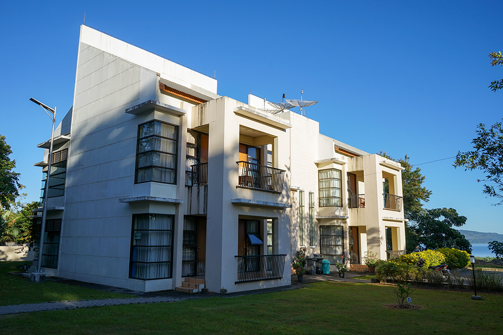

Laboratorium Komputer dan Bahasa
Definisi Laboratorium Komputasi adalah ruangan yang dilabeli sebagai laboratorium komputasi yang berisi sekumpulan perangkat yang terdiri atas Komputer Desktop, Laptop, AC, projector, printer, dan perangkat lain sesuai dengan kebutuhan dari laboratorium yang dimaksud
Fasilitas laboratorium komputasi dimaksudkan sebagai sarana kerja, pendidikan, penelitian maupun pengabdian pada masyarakat. Kepada para pengguna diharapkan pengertian dan kesadarannya untuk menjaga keutuhan dan keamanan peralatan yang ada, serta berperan dalam menciptakan suasana akademik yang lebih berhasil guna. Kesadaran ini hendaknya diterapkan terhadap semua peralatan sarana dan prasarana yang dimiliki oleh Institut Teknologi Del dan semua sistem komputasi lain yang dapat diakses melalui jaringan komunikasi yang tersedia.

Akomodasi Dosen
Institut Teknologi Del (IT Del) menyediakan fasilitas perumahan untuk dosen dan staf penunjang di lingkungan kampus. Dengan tinggal di lingkungan kampus, seluruh dosen dan staf bisa memberikan kontribusi terbaik untuk kelancaran dan kualitas proses akademis dan non-akademis di IT Del. Dengan lingkungan dan fasilitas yang ergonomis, diharapkan juga dosen bisa mengembangkan diri secara lebih maksimal. Beberapa tipe perumahan yang tersedia untuk dosen dan staf (setiap bangunan di beri gambar):
Rumah Dosen (RD), terdiri dari 8 unit rumah yang fully-furnished, diperuntukkan untuk dosen yang sudah berkeluarga.

Kantin
Kantin Politeknik Informatika Del menyediakan menu makanan yang bergizi dan sehat untuk semua mahasiswa/i. Menu yang disediakan selalu memenuhi standard gizi, sehingga mahasiswa bisa melaksanakan aktifitas perkuliahan dengan sehat dan prima. Setiap mahasiswa diwajibkan untuk makan di kantin tiga kali setiap harinya.
Jam makan mahasiswa yang berlaku di kantin Politeknik Informatika Del selama masa perkuliahan setiap minggunya sebagai berikut:
| Hari |
Makan Pagi |
Makan Siang |
Makan Malam |
| Senin, Selasa, Kamis |
Pukul 07:00 – 07:20 WIB |
Pukul 12:15 – 12:35 WIB |
Pukul 19:00 – 19:20 WIB |
| Rabu |
Pukul 07:30 – 07:50 WIB |
Pukul 12:15 – 12:35 WIB |
Pukul 19:00 – 19:20 WIB |
| Jumat |
Pukul 07:30 – 07:50 WIB |
Pukul 12:15 – 12:35 WIB |
Pukul 19:00 – 19:20 WIB |
| Sabtu |
Pukul 08:00 – 09:00 WIB |
Pukul 12:00 – 13:00 WIB |
|
Layanan Makan Kantin dan Etika Makan Mahasiswa
Untuk Sabtu sore dan hari Minggu, layanan kantin untuk mahasiswa ditiadakan. Pada waktu tersebut, mahasiswa diperbolehkan keluar kampus, termasuk ijin bermalam, untuk makan.
Etika makan yang berlaku adalah sebagai berikut:
1. Mahasiswa berpakaian rapi dan bersih.
2. Mengikuti tata cara makan yang baik (table manner).
3. Menggunakan sendok dan garpu.
4. Mulut tertutup rapat pada saat mengunyah makanan.
5. Tidak menimbulkan bunyi dari peralatan makan.
6. Berbicara sewajarnya (tidak terlalu keras sehingga tidak mengganggu orang lain).
7. Mengambil makanan secukupnya dan menghabiskannya tanpa sisa.
Jam operasional IT Del Shop adalah pukul 07:00 – 18:00 (Senin – Jumat), dan 07:00 – 12:00 (Sabtu).

Perpustakaan
Perpustakaan Politeknik Informatika Del (PI Del) berdiri sejak tanggal 9 Januari 2002 dengan sistem pelayanan open acces (terbuka). Selanjutnya berubah nama seiring dengan berubahnya status Politeknik menjadi Institut sejak tahun 2013. Perpustakaan berganti nama menjadi Perpustakaan Institut Teknologi Del. Perpustakaan Institut Teknologi Del memiliki fungsi utama yaitu fungsi pendidikan. Pengadaan koleksi dan pengembangan minat baca internal dan eksternal Institut Teknologi Del dilakukan sebagai bagian dari kegiatan diseminasi kegiatan peningkatan minat baca.
Perpustakaan IT Del memiliki visi yaitu “Sebagai pusat informasi terkemuka yang menyediakan layanan informasi cetak maupun cetak dan juga penyedia layanan informasi berteknologi tinggi. Untuk mencapai visi dimaksud, misi yang diemban oleh Perpustakaan IT Del adalah sebagai berikut:
1. Menyediakan layanan pustaka yang mendukung program-program akademik dan non akademik.
2. Memberikan layanan informasi cetak maupun non cetak bagi seluruh civitas akademika PI Del maupun kepada masyarakat umum.
3. Meningkatkan cara dan proses diseminasi koleksi lebih efisien dan efektif.
4. Meningkatkan keragaman koleksi demi peningkatan mutu layanan
Pada awal berdiri, perpustakaan IT Del menempati 1 ruangan yang berada di Lt. 2 Gedung administrasi dan Ruangan direktur IT Del. Namun demikian perpustakaan banyak dikunjungi oleh mahasiswa/i yang saat itu masih sekitar 60 mahasiswa/i angkatan I PI-Del. Sangat membanggakan dengan jumlah hanya 138 buku dan baru berdiri setelah 3 bulan penerimaan mahasiwa/i baru, hal ini yang menyebabkan perpustakaan menjadi tempat yang ramai dikunjungi.
Pada tahun 2003 gedung perpustakaan yang baru telah selesai dibangun, letaknya berada di samping gedung auditorium. Gedung baru terdiri dari 2 lantai, 2 unit ruang diskusi, 1 unit ruang referensi, 1 unit ruang baca tenang, unit ruang pengolahan buku dan 1 unit ruang kepala perpustakaan.

Olahraga dan Hiburan
Sarana Olahraga
Kampus IT Del memiliki fasilitas untuk olahraga sebagai berikut:
1. Bola basket
2. Futsal
3. Bola voli
4. Badminton
5. Tenis Meja
6. Jogging
Hiburan
IT Del memiliki beberapa sarana hiburan yang dapat digunakan dosen, staf dan mahasiswa IT Del, antara lain:
1. Meja Bilyard
2. Televisi (di Entrance Hall dan kantin)
3. Alat music (drum, gitar, organ, keyboard, gondang)
Selain itu, dosen, staf dan mahasiswa IT Del mengadakan acara-acara yang bersifat hiburan pada waktu-waktu tertentu, antara lain: pertandingan olahraga dosen/staf dan mahasiswa, Nonton Bareng, Retreat rohani, jalan-jalan bersama.

Ruang Terbuka
Saat kita memperhatikan lingkungan kampus di Indonesia maka mungkin hasilnya akan bertolak belakang dengan saat kita membayangkan lingkungan kampus di negara-negara maju. Membayangkan para mahasiswa kita duduk di bawah pohon-pohon hijau dan beralaskan rumput yang segar, atau membayangkan para mahasiswa melepaskan lelah setelah kuliah di kelas, mengistirahatkan otak mereka dari tumpukan teori sambil bermain bola, atau permainan lainnya di lapangan hijau sangat mungkin jarang kita lihat. Kampus Institut Teknologi Del (IT Del) tidak hanya berfungsi sebagai lembaga pendidikan saja.
Tapi kampus Del bisa difungsikan sebagai Ruang Terbuka Hijau (RTH). Luas IT Del sekitar 12 hektar dan 60% ruang terbuka hijau. IT Del terbagi dalam tiga area yaitu Open Theater (OT), Asrama, dan Entrance Hall (EH). Selain itu, IT Del terbentang luas pemandangan Danau Toba di area belakang kampus. Fasilitas ruang terbuka sering digunakan oleh mahasiswa di lokasi OT dan EH untuk kerja kelompok, belajar individu, dan bersantai.

Klinik
Paktek umum dokter Del resmi didirikan pada bulan Mei tahun 2009, terletak disamping pintu masuk ke area kampus Institut Teknologi Del. Tujuan didirikan praktek umum ini yang terutama adalah untuk melayani siswa, mahasiswa, pegawai Del tetapi selain itu juga untuk melayani masyarakat disekitar lingkungan kampus. Praktek umum ini bersifat sosial, non-profit, tetapi juga tetap berusaha menjaga mutu pelayanan agar sesuai dengan standar pelayanan termutakhir. Praktek umum ini juga bekerja sama dengan Jamsostek sebagai PPK I untuk melayani pasien-pasien yang terdaftar sebagai tanggungan Jamsostek dalam wilayah ini. Praktek umum ini bisa melayani pengobatan dasar (meliputi anak dan dewasa) hingga yang membutuhkan tindakan bedah sederhana. Di dalam praktek umum ini juga sudah tersedia obat sehingga tidak perlu membeli obat lagi di tempat lain. Saat ini praktek umum ini sedang dalam proses pengembangan menjadi klinik Yayasan Del.
Dokter yang bertugas:
dr. Eva C. Saragih
dr. Johanes Pardede (Penanggung Jawab Klinik)
Jam Pelayanan :
Hari: Senin – Jumat
Pukul: 16.30 – 19.30